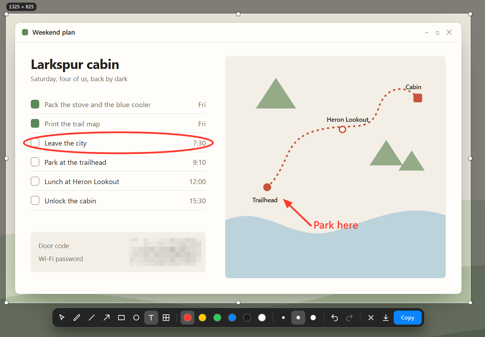
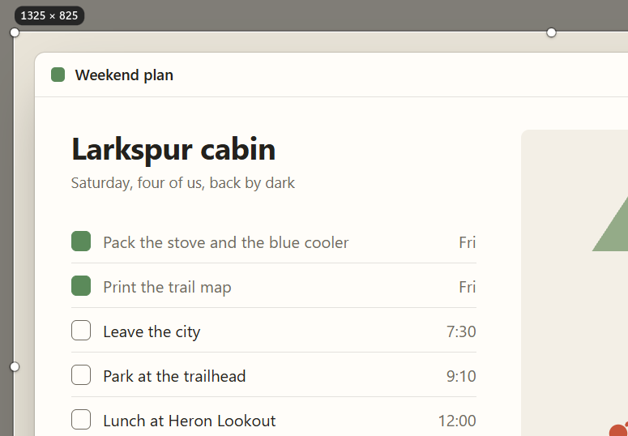
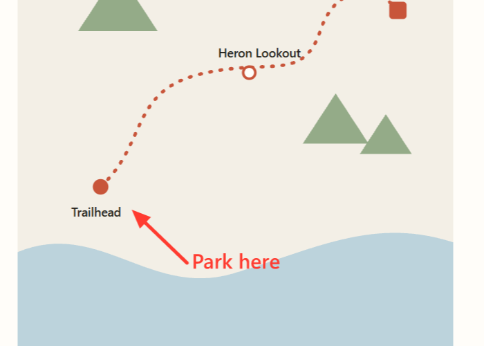
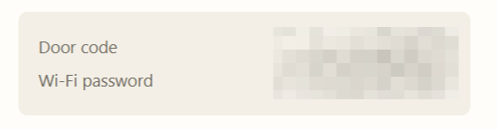
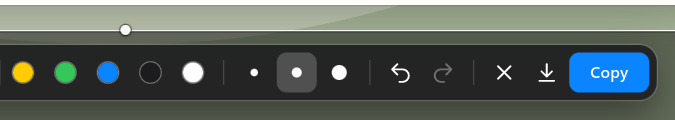

your screen, framed
A screenshot tool for Windows. Freeze the desktop, drag an area, mark it up, then copy or save it.

Freeze, then frame
PrtSc freezes every display as it is, so menus and tooltips stay put. Drag the area you want, then nudge its edges until the pixel count is right.
- PrtSc Start a capture from anywhere

Say it on the picture
Six colours, three weights, and undo and redo as far as you like. Every tool is one key.
- P Pen
- L Line
- A Arrow
- R Rectangle
- E Ellipse
- T Text

Hidden for good
Ordinary pixelation can be guessed back. Koma blends each block with what is far around it and adds noise that differs on every capture, so nobody can work back to what was there.
- X Pixelate

Out in one key
Copy the picture to the clipboard, or save it as a PNG in your Screenshots folder, named the way Windows names its own.
- Enter Copy
- Ctrl+S Save
- Esc Cancel

nothing else
-
One file
A single program with no installer. Put it wherever you keep programs and run it.
-
Stays on your computer
No account and no network. The frozen pictures of your desktop are deleted when the capture ends.
-
Out of the way
Koma waits in the notification area, where you can set it to start at login.
Get Koma
Windows 10 and 11
Download Koma.exe and run it. It isn't code-signed, so Windows SmartScreen may warn the first time: choose More info, then Run anyway.
If PrtSc opens Snipping Tool
Windows keeps the key for itself until you turn off Use the Print screen key to open screen capture in Settings, under Accessibility, then Keyboard.